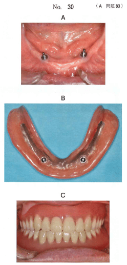

インプラントオーバーデンチャー（IOD: Implant supported Over Denture）は、数本のインプラントを支台として、その上に有床義歯を装着する補綴法である。
下顎無歯顎の可撤性補綴治療として、オトガイ孔間に埋入した2本のインプラントで維持するIODを第一選択とすることが提唱された。
| 項目 | オーバーデンチャー | 固定性補綴装置 |
|---|---|---|
| インプラント本数 | 少なくて良い | 多い（6〜8本） |
| 清掃性 | 容易（取り外し可能） | やや困難 |
| リップサポート | 良好 | 顎堤吸収時に劣る |
| 顔貌の審美性 | 改善しやすい | やや劣る |
| 発音（息漏れ） | 生じにくい | 生じやすい場合あり |
| 咀嚼能力 | 劣る | 高い |
| 修理頻度 | 高い | 低い |
| 項目 | バー | 磁性 |
|---|---|---|
| 維持力 | 大きい | 小さい |
| 角度許容 | 広い | 狭い（平行性必要） |
| 着脱容易性 | やや困難 | 容易 |
| 清掃性 | やや困難 | 容易 |
| MRI | 問題なし | アーチファクト |
※顎堤条件にかかわらず維持力を発揮できる点が最大の利点
無歯顎者のインプラント治療で、固定性補綴装置と比較したオーバーデンチャーの利点はどれか。4つ選べ。
【解説】オーバーデンチャーの利点は清掃が容易（取り外し可能）、息漏れを生じにくい（床で閉鎖）、顔貌の審美性を改善しやすい（リップサポート）、インプラント埋入本数を少なくできる。咀嚼能力は固定性補綴装置の方が高い。
70歳の女性。下顎全部床義歯のがたつきによる咀嚼困難を主訴として来院した。診察の結果、下顎前歯部に2本のインプラントを埋入することとした。
インプラント埋入により向上するのはどれか。2つ選べ。

【解説】下顎前歯部に2本のインプラントを埋入したインプラント維持型オーバーデンチャー。インプラント埋入により維持（脱離抵抗）と把持（側方移動抵抗）が向上する。審美性・清掃性・耐久性はインプラント埋入によって直接向上するものではない。
75歳の女性。5年前に製作した下顎のインプラントオーバーデンチャーが外れやすくなったことを主訴として来院した。検査の結果、咬合状態には問題を認めなかった。
適切な対応はどれか。1つ選べ。
【解説】「外れやすくなった」＝維持力の低下。咬合状態に問題がなく、5年使用後の維持力低下はアタッチメントの摩耗・劣化が原因と考えられる。まずアタッチメントの交換で対応する。
73歳の女性。上顎右側側切歯の動揺を主訴として来院した。3年前から下顎インプラントオーバーデンチャーを使用しているが、就寝中は外しているという。バーアタッチメントには矢印で示す磨耗が認められる。
まず行うべき対応はどれか。1つ選べ。
【解説】バーアタッチメントの磨耗の原因は、就寝中に義歯を外していることで残存歯（上顎前歯）がバーに直接接触しているため。まず就寝時の義歯装着を指示する。上顎前歯の動揺も、バーとの接触による咬合性外傷が原因と考えられる。
75歳の女性。下顎全部床義歯の不適合による咀嚼困難を主訴として来院した。これまでに製作した義歯は不安定であったため、インプラント義歯を製作することとした。
装着する義歯の特徴はどれか。1つ選べ。
【解説】インプラントオーバーデンチャーの最大の利点は顎堤条件にかかわらず維持力を発揮できること。従来の全部床義歯では不安定だった症例でも、インプラントにより安定した維持が得られる。患者可撤式（術者可撤式ではない）。